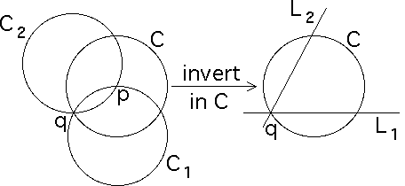
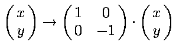
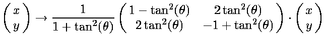
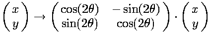
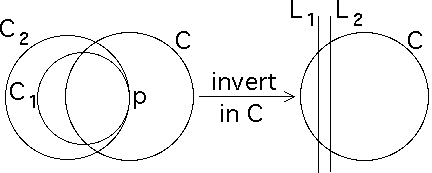

We begin with a lemma.
Lemma If the open discs Di bounded by the
inverting circles Ci are pairwise disjoint, the only relations
among the inversions are
Proof Suppose some relation
Take a point z0 in the complement of the closed discs corresponding to the Di. Then
| z1 = Ii1(z0) lies in Di1, |
| z2 = Ii2(z1) lies in Di2, |
| ... , and |
| zn = Iin(zn-1) lies in Din. |
The hypothesized relation implies
Now we are ready for the theorem.
Theorem Distinct circles C1 and C2
intersect with tangents making an angle of (m/n)180,
Proof Suppose C1 and C2 intersect at two points, p and q.
Denote by C the circle with center p and passing through q.
Because C1 and C2 both pass through the center of C, inverting in C transforms C1 and C2 into lines (inversion property (vii)) L1 and L2, intersecting at q.
Inversion in C transforms the inversions in C1 and C2 into the reflections R1 across L1 and R2 across L2.
Because inversion preserves angles, the angle between L1 and L2 at q equals the angle between the tangents of C1 and C2 at q.
|  |
It is well-known that the composition of two reflections across lines intersecting at a point q is the rotation, about q, through twice the angle between the lines.
For example, in the situation illustrated above, reflection across L1 is
|  |
and reflection across L2 is
|  |
where q is the angle between L1 and L2.
Reflection across L1 followed by reflection across L2 reduces to
|  |
That is, rotation by 2q.
If the angle between L1 and L2 is (m/n)180, then (R1R2)n is the rotation by n(2m/n)180, that is, the identity.
Using inversion in C to translate this relation back to
I1 and I2, we see
If C1 and C2 intersect tangentially at a point p, inversion in a circle C centered at this point p transforms C1 and C2 into lines L1 and L2 and inversion in Ci into reflection Ri across Li.
Because the lines are distinct, no relation of the form
|  |
Now suppose (I1I2)n = identity.
Then from the Lemma it follows that D1 and D2 intersect, consequently C1 and C2 intersect in two points, p and q.
(The case C1 = C2 is precluded by the hypothesis that the circles are distinct.)
Inverting in the circle C with center p and passing through q transforms the circles C1 and C2 into the lines L1 and L2, and transforms I1 and I2 into reflections R1 and R2 across L1 and L2.
Denote by q the angle of intersection of L1 and L2 at q.
Then as we saw above, R1R2
is rotation by 2q, and
Return to Overlapping Circles.